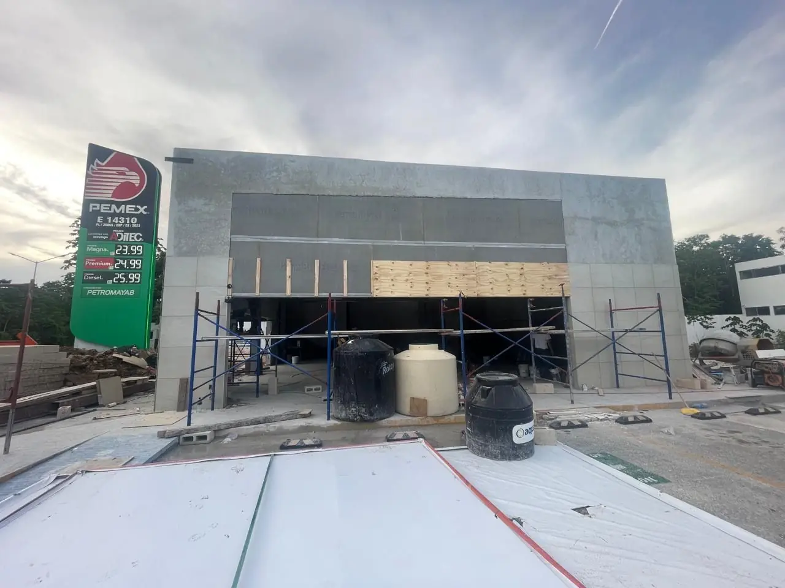

Une station-service est un projet de cuves, tuyauteries, auvent, boutique et autorisations plus que de mètres carrés. Choisissez distributeurs, cuves, boutique et lavage et obtenez une fourchette 2026 pour votre zone.

Chaque distributeur ajoute îlot, tuyauteries, surface d'auvent et revêtement.
Cuves double paroi, terrassement dans la roche et rétention sont un poste majeur.
La boutique rend souvent la station rentable.
Revenus en plus et traitement de l'eau à prévoir.
Les autorisations fédérales du secteur énergie fixent le calendrier.
Îles et sites isolés ajoutent de la logistique.
Fourchette indicative 2026 hors terrain, taxes et TVA. Une visite et l'étude de sol fixent le prix final.
Recevoir un devis détailléGénie civil, revêtements, auvent, cuves avec rétention, tuyauteries, îlots, électricité, boutique et lavage si choisi. Hors terrain, équipements fournis par l'enseigne, taxes et TVA.
| Zone | Projet type (MXN) |
|---|---|
| Costa Mujeres | $10 272 000 – $17 928 000 |
| Isla Mujeres | $10 786 000 – $18 824 000 |
| Holbox | $11 128 000 – $19 422 000 |
| Cancún | $8 560 000 – $14 940 000 |
| Puerto Morelos | $9 330 000 – $16 285 000 |
| Playa del Carmen | $8 902 000 – $15 538 000 |
| Cozumel | $10 443 000 – $18 227 000 |
| Puerto Aventuras | $9 502 000 – $16 583 000 |
| Xpu-Há | $10 871 000 – $18 974 000 |
| Akumal | $10 015 000 – $17 480 000 |
| Chan Chemuyil | $9 844 000 – $17 181 000 |
| Tulum | $9 673 000 – $16 882 000 |
| Felipe Carrillo Puerto | $7 704 000 – $13 446 000 |
| Bacalar | $8 303 000 – $14 492 000 |
| Mahahual | $9 587 000 – $16 733 000 |
| Chetumal | $7 875 000 – $13 745 000 |
Pages utiles : Calculateur de coût d'hôtel · Calculateur de coût commercial · Calculateur de coût de clinique · Calculateur maison · Calculateur de coût d'entrepôt
Vérification du terrain, parcours d'autorisations et coût. Réponse en 2 minutes.
Demander un devis sur WhatsAppVotre avis aide d'autres propriétaires à décider, et nous aide à progresser.
Rédiger un avisVoir les avis Google